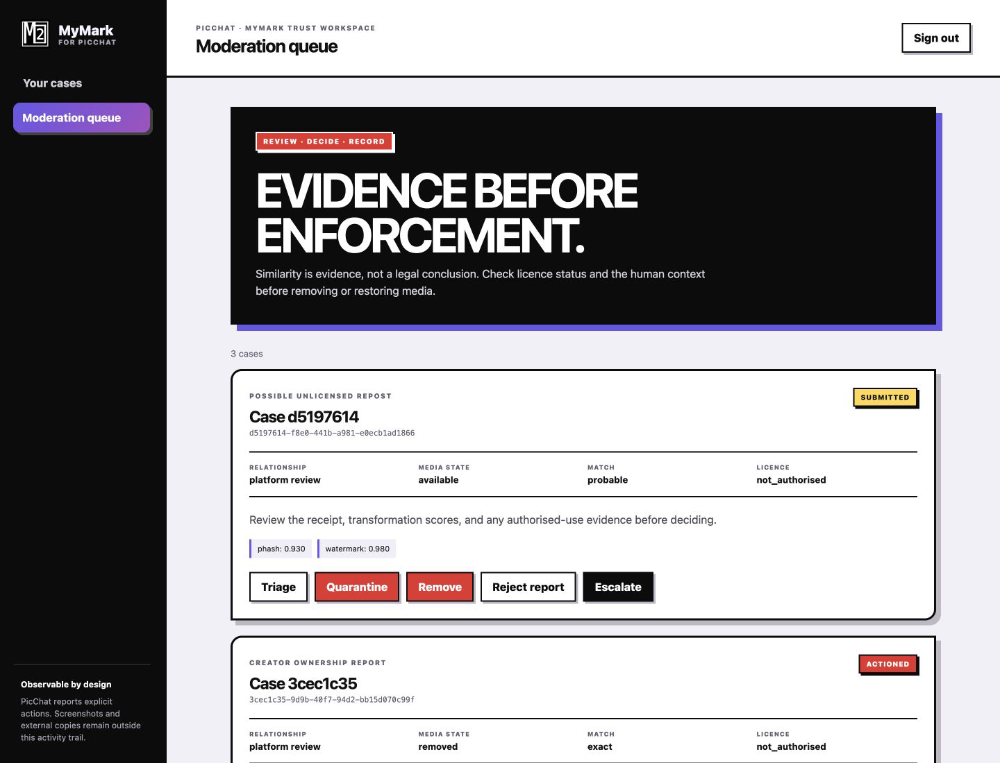

Private preview · Invite only
Make the useful boundary visible.
PIT brings conversations, spaces, sharing and moderation into one focused interface. MyMark provenance and protection integration are being qualified as part of the private preview.
Current posture: internal beta / development preview. PIT does not claim to detect screenshots, browser caching, cameras, copies made outside PIT, or activity in applications that are not integrated with MyMark.
There is no public app link yet. Production hosting, HTTPS origin, authentication, device qualification and release approval remain outstanding. Authorised preview materials must not be redistributed; no production guarantee is given. Contact hello@bstudiob.co.uk to discuss access.